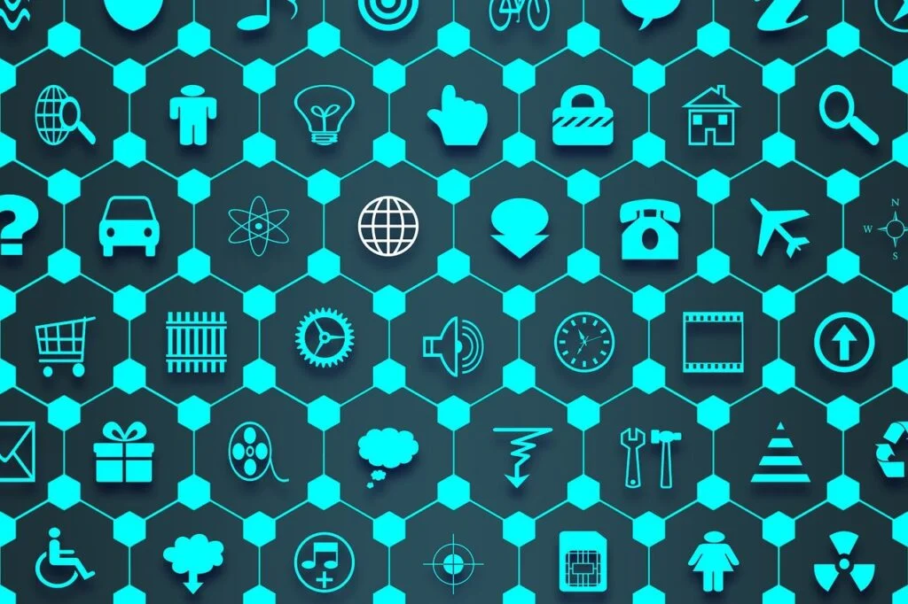

“…Für die Verbindung von physischen Produkten mit dem Internet gilt eine
ganz klare, kompromisslose Prämisse und das ist die Sicherheit. Denn die Produkte für die Digitalisierung
sind Produkte des täglichen Lebens, mit denen wir ständig in Kontakt sind und auf deren Funktionalität wir
uns verlassen müssen. Sei dies der Zug auf dem Weg zur Arbeit, der Lift im Bürogebäude oder die
Kaffeemaschine in der Pause – alle diese Alltagsprodukte weisen ein signifikantes Optimierungs-Potential
durch Digitalisierung auf, sowohl in umwelttechnischer wie auch finanzieller Hinsicht. qiio bietet dafür die
nötigen Technologien…”
Asut-Bulletin Artikel hier lesen:
https://asut.ch/asut/bulletin